Fixed-Point Sine and Cosine Calculation
Developing efficient fixed-point sine and cosine algorithms is critical in many embedded applications, including motor controls, navigation, signal processing, and wireless communications. This demo shows how to use CORDIC algorithm approximations provided by the Fixed-Point Toolbox™. The cordiccexp, cordicsincos, cordicsin, and cordiccos functions approximate the MATLAB® sin and cos functions, which only support floating-point data types.
Contents
Calculating Sine and Cosine Using the CORDIC Algorithm
Introduction
CORDIC is an acronym for COordinate Rotation DIgital Computer. The Givens rotation-based CORDIC algorithm (see [1,2]) is among one of the most hardware efficient algorithms because it only requires iterative shift-add operations. The CORDIC algorithm eliminates the need for explicit multipliers, and is suitable for calculating a variety of functions, such as sine, cosine, arcsine, arccosine, arctangent, vector magnitude, divide, square root, hyperbolic and logarithmic functions.
The CORDIC rotation computing mode is used to calculate sine and cosine, as well as polar-to-cartesian conversion operations. In this mode, the vector magnitude and an angle of rotation are known and the coordinate (X-Y) components are computed after rotation.
CORDIC Rotation Computation Mode
The CORDIC rotation mode algorithm begins by initializing an angle accumulator with the desired rotation angle. Next, the rotation decision at each CORDIC iteration is done in a way that decreases the magnitude of the residual angle accumulator. The rotation decision is based on the sign of the residual angle in the angle accumulator after each iteration.
In rotation mode, the CORDIC equations are:
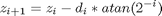
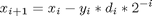
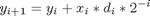
where 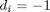 if 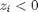, and 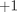 otherwise;
i = 0, 1, ..., N-1, and N is the total number of iterations.
This provides the following result as N approaches  :
:
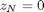

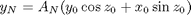
Where:
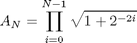.
In rotation mode, the CORDIC algorithm is limited to rotation angles between 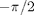 and 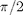. To support angles outside of that range, the cordiccexp, cordicsincos, cordicsin, and cordiccos functions use quadrant correction (including possible extra negation) after the CORDIC iterations are completed.
Understanding the CORDIC Sine and Cosine Code
Introduction
The cordicsincos function calculates the sine and cosine of input angles in the range [-2*pi 2*pi) using the CORDIC algorithm. This function takes an angle  (radians) and a number of iterations as input arguments. The function returns the approximations of sine and cosine.
(radians) and a number of iterations as input arguments. The function returns the approximations of sine and cosine.
The CORDIC computation outputs are scaled by the rotator gain. This gain is accounted for by pre-scaling the initial 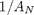 constant value. The judicious choice of initial values allows the algorithm to directly compute both sine and cosine simultaneously.
Initialization
The cordicsincos function performs the following initialization steps:
- The angle input look-up table inpLUT is set to atan(2 .^ -(0:N-1)).
- 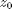 is set to the input argument value.
 is set to .
is set to .- 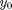 is set to zero.
After N iterations, these initial values lead to the following outputs as N approaches :
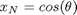
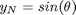
Shared Fixed-Point and Floating-Point CORDIC Kernel Code
The MATLAB code for the CORDIC algorithm (rotation mode) kernel portion is as follows (for the case of scalar x, y, and z). This same code is used for both fixed-point and floating-point operations:
type(fullfile(matlabroot,'toolbox','fixedpoint','fixedpoint','cordic_kernel_private.m'))
function [x, y, z] = cordic_kernel_private(x, y, z, inpLUT, niters)
% CORDIC_KERNEL_PRIVATE Perform CORDIC iterations.
% Copyright 2009-2010 The MathWorks, Inc.
%#eml
if ~isempty(eml.target)
eml_prefer_const(inpLUT, niters);
end
xtmp = x;
ytmp = y;
for idx = 1:niters
if z < 0
z(:) = z + inpLUT(idx);
x(:) = x + ytmp;
y(:) = y - xtmp;
else
z(:) = z - inpLUT(idx);
x(:) = x - ytmp;
y(:) = y + xtmp;
end
xtmp = bitsra(x, idx);
ytmp = bitsra(y, idx);
end
% [EOF]
Visualizing the Sine-Cosine Rotation Mode CORDIC Iterations
The CORDIC algorithm is guaranteed to converge, but not always monotonically in a finite number of iterations. You can typically achieve greater accuracy by increasing the number of iterations. However, as you can see in the following example, intermediate iterations occasionally produce more accurate results than later iterations.
Even so, the CORDIC algorithm is usually run through a predetermined number of iterations. Ending the iterations early would break pipelined code, and the gain 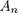 would not be constant because 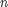 would vary.
In the following example, iteration 5 provides a better estimate of the result than iteration 6, and the CORDIC algorithm converges in later iterations.
theta = pi/5; % input angle in radians niters = 10; % number of iterations sinTh = sin(theta); % reference result cosTh = cos(theta); % reference result y_sin = zeros(niters, 1); sin_err = zeros(niters, 1); x_cos = zeros(niters, 1); cos_err = zeros(niters, 1); fprintf('\n\nNITERS \tERROR\n'); fprintf('------\t----------\n'); for n = 1:niters [y_sin(n), x_cos(n)] = cordicsincos(theta, n); sin_err(n) = abs(y_sin(n) - sinTh); cos_err(n) = abs(x_cos(n) - cosTh); if n < 10 fprintf(' %d \t %1.8f\n', n, cos_err(n)); else fprintf(' %d \t %1.8f\n', n, cos_err(n)); end end fprintf('\n');
NITERS ERROR ------ ---------- 1 0.10191021 2 0.13966630 3 0.03464449 4 0.03846157 5 0.00020393 6 0.01776952 7 0.00888037 8 0.00436052 9 0.00208192 10 0.00093798
Plot the CORDIC approximation error on a bar graph
figure(1); clf; bar(1:niters, cos_err(1:niters)); xlabel('Number of iterations','fontsize',12,'fontweight','b'); ylabel('Error','fontsize',12,'fontweight','b'); title('CORDIC approximation error for cos(pi/5) computation','fontsize',12,'fontweight','b'); axis([0 niters 0 0.14]);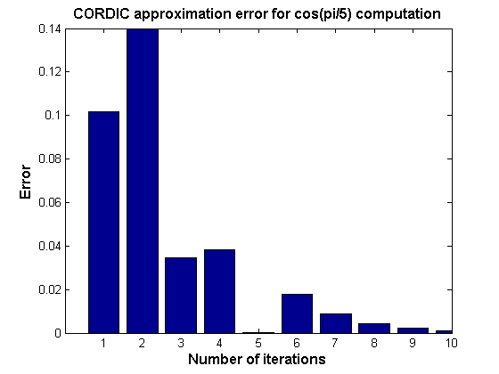
Plot the X-Y results for 5 iterations
Niter2Draw = 5; figure(2), clf, hold on plot(cos(0:0.1:pi/2), sin(0:0.1:pi/2), 'b--'); % semi-circle for i=1:Niter2Draw plot([0 x_cos(i)],[0 y_sin(i)], 'LineWidth', 2); % CORDIC iteration result text(x_cos(i),y_sin(i),int2str(i),'fontsize',12,'fontweight','b'); end plot(cos(theta), sin(theta), 'r*', 'MarkerSize', 20); % IDEAL result xlabel('X (COS)','fontsize',12,'fontweight','b') ylabel('Y (SIN)','fontsize',12,'fontweight','b') title('CORDIC iterations for cos(pi/5) computation','fontsize',12,'fontweight','b') axis equal; axis square;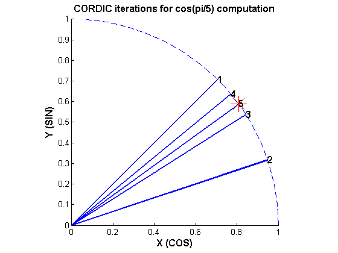
Computing Fixed-point Sine with cordicsin
Create 1024 points between [-2*pi, 2*pi)
stepSize = pi/256; thRadDbl = (-2*pi):stepSize:(2*pi - stepSize); % double precision floating-point thRadFxp = sfi(thRadDbl, 12); % signed, 12-bit fixed-point sinThRef = sin(double(thRadFxp)); % reference results % Use 12-bit quantized inputs and vary number of iterations from 4 to 10. % Compare fixed-point CORDIC vs. double-precision trig function results. for niters = 4:3:10 cdcSinTh = cordicsin(thRadFxp, niters); errCdcRef = sinThRef - double(cdcSinTh); figure; hold on; axis([-2*pi 2*pi -1.25 1.25]); plot(thRadFxp, sinThRef, 'b'); plot(thRadFxp, cdcSinTh, 'g'); plot(thRadFxp, errCdcRef, 'r'); ylabel('sin(\Theta)','fontsize',12,'fontweight','b'); set(gca,'XTick',-2*pi:pi/2:2*pi); set(gca,'XTickLabel',... {'-2*pi', '-3*pi/2', '-pi', '-pi/2', ... '0', 'pi/2', 'pi', '3*pi/2','2*pi'}); set(gca,'YTick',-1:0.5:1); set(gca,'YTickLabel',{'-1.0','-0.5','0','0.5','1.0'}); ref_str = 'Reference: sin(double(\Theta))'; cdc_str = sprintf('12-bit CORDICSIN; N = %d', niters); err_str = sprintf('Error (max = %f)', max(abs(errCdcRef))); legend(ref_str, cdc_str, err_str); title(cdc_str,'fontsize',12,'fontweight','b'); end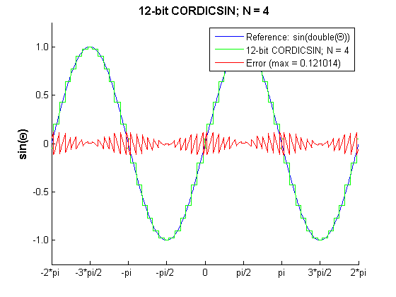 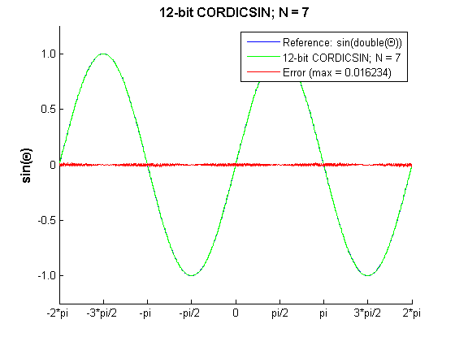 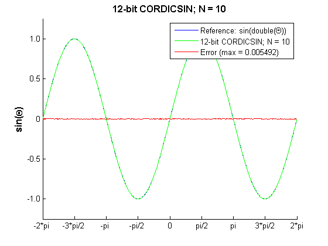
Compute the LSB Error for N = 10
fracLen = cdcSinTh.FractionLength; figure; plot(thRadFxp, abs(errCdcRef) * pow2(fracLen)); set(gca,'XTick',-2*pi:pi/2:2*pi); set(gca,'XTickLabel',... {'-2*pi', '-3*pi/2', '-pi', '-pi/2', ... '0', 'pi/2', 'pi', '3*pi/2','2*pi'}); ylabel('LSB Error: 1 LSB = 2^{-10}','fontsize',12,'fontweight','b'); title('LSB Error: 12-bit CORDICSIN; N=10','fontsize',12,'fontweight','b'); axis([-2*pi 2*pi 0 6]);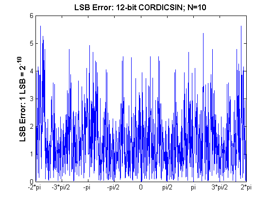
Compute Noise Floor
fft_mag = abs(fft(double(cdcSinTh))); max_mag = max(fft_mag); mag_db = 20*log10(fft_mag/max_mag); figure; hold on; plot(0:1023, mag_db); sfdr = max(mag_db(3:end-1)); plot(0:1023,sfdr*ones(1,1024),'r--'); ylabel('dB Magnitude','fontsize',12,'fontweight','b'); title('63.59 dB Noise Floor: 12-bit CORDICSIN; N=10','fontsize',12,'fontweight','b'); % axis([0 1023 -120 0]); full FFT axis([0 round(1024*(pi/128)) -90 0]); % zoom in set(gca,'XTick',[0 round(1024*pi/256) round(1024*pi/128)]); set(gca,'XTickLabel',{'0','pi/256','pi/128'});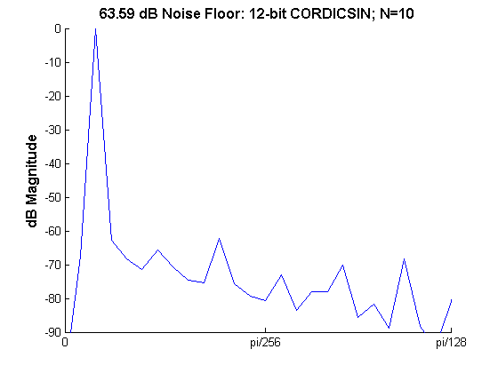
Accelerating the Fixed-Point cordicsincos Function with emlmex
A C-MEX function can be generated from MATLAB code using the Embedded MATLAB® emlmex command. Typically, running the generated C-MEX function can improve the simulation speed (see [3]). The actual speed improvement depends on the simulation platform being used. The following example shows how to accelerate the fixed-point cordicsincos function using emlmex.
The emlmex function compiles the MATLAB code into a C-MEX function. This step requires the creation of a temporary directory and write permissions in this directory.
emlmexdir = [tempdir 'emlmexdir']; if ~exist(emlmexdir,'dir') mkdir(emlmexdir); end emlcurdir = pwd; cd(emlmexdir)
Compile cordicsincos into a C-MEX file. When you declare the number of iterations to be a constant (e.g., 10) using emlcoder.egc(10), the angle look-up table will also be constant, and thus won't be computed at each iteration. Additionally, when you call cordicsincos_mex, you no longer need to give it the input argument for the number of iterations. If you do try to pass in the number of iterations, the MEX-function will error.
The data type of the input parameters determines whether the cordicsincos function performs fixed-point or floating-pointt calculations. When the Embedded MATLAB subset generates code for this file, code is only generated for the specific data type. In other words, if the THETA input argument is fixed point, then only fixed-point code is generated.
inp = {thRadFxp, emlcoder.egc(10)}; %Example inputs for the function
emlmex('cordicsincos', '-o', 'cordicsincos_mex', '-eg', inp)
First, calculate sine and cosine by calling cordicsincos.
tstart = tic; cordicsincos(thRadFxp,10); telapsed_Mcordicsincos = toc(tstart);
Next, calculate sine and cosine by calling the MEX-function cordicsincos_mex.
cordicsincos_mex(thRadFxp); % load the MEX file
tstart = tic;
cordicsincos_mex(thRadFxp);
telapsed_MEXcordicsincos = toc(tstart);
Now, compare the speed. Type the following at the MATLAB command line to see the speed improvement on your platform:
emlmex_speedup = telapsed_Mcordicsincos/telapsed_MEXcordicsincos;
To clean up the temporary directory, run the following commands:
cd(emlcurdir); clear cordicsincos_mex; status = rmdir(emlmexdir,'s'); % Close all figure windows close all;
References
- Jack E. Volder, The CORDIC Trigonometric Computing Technique, IRE Transactions on Electronic Computers, Volume EC-8, September 1959, pp330-334.
- Ray Andraka, A survey of CORDIC algorithm for FPGA based computers, Proceedings of the 1998 ACM/SIGDA sixth international symposium on Field programmable gate arrays, Feb. 22-24, 1998, pp191-200
- Speeding Up Fixed-Point Execution with the emlmex Function, in section "Working with the Fixed-Point Embedded MATLAB Subset" of Fixed-Point Toolbox User's Guide